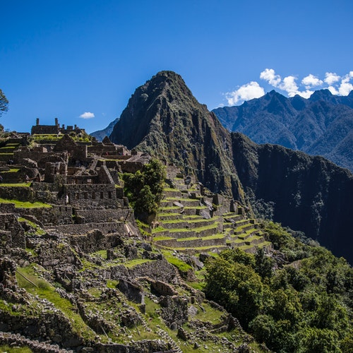
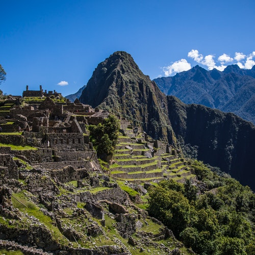

Travel
MACHU PICHU
HISTORIA
Machu Picchu es una ciudadela inca ubicada en las alturas de las montañas de los Andes en Perú, sobre el valle del río Urubamba. Se construyó en el siglo XV y luego fue abandonada, y es famosa por sus sofisticadas paredes de piedra seca que combinan enormes bloques sin el uso de un mortero, los edificios fascinantes que se relacionan con las alineaciones astronómicas y sus vistas panorámicas. El uso exacto que tuvo sigue siendo un misterio.
¿Qué significa Machu Picchu para los incas?
El nombre de Machu Picchu significa 'montaña vieja'. Sin embargo, en quechua montaña se dice orqo. Picchu es un derivado de 'pico', en castellano. No es su nombre original”, puntualiza.
Popular

 
